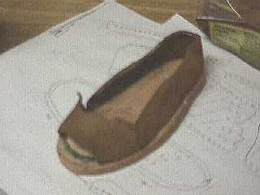

The fragments of this shoe were found by a Geert Vanderdonkt, 22 June 2000, in or around the Belgian town of Ypres. The pieces were loaned to me for a brief time by Vanderdonkt through his American representative. The archaeological drawing and the reproduction shown above were done by me. To the best of my knowledge, the shoe has been returned to Belgium.
The shoe is clearly a welted shoe, placing its dating after the 1480s. The round closing at the front of the vamp, and the shape of the insole suggest that this might have been a square toed horned shoe. I have suggested a dating of 1530 at the latest based on these sole features. The remains of the sewing inside the vamp suggests there may have been straps over the instep. The upper edge of the quarters has round stitching that could be indicative of an edge-binding. The thin strip of calf leather stabbed through may be part of this edge binding. The upper appears to be goat, while the sole, rounders and welt are of bovine. The diagonal stitching through the sole looks like a holdover from 15th century outsole attachment. The insole is 19 cm long, indicating that the shoe belonged either to a child or a small woman.
Footwear of the Middle Ages - Historical Shoe Designs/Ypres Shoe (c1530), by I.
Marc Carlson. Copyright 2001
This page is given for the free exchange of information, provided the Author's Name is
included in all future revisions, and no money change hands, other than as expressed in
the Copyright Page.
{kind=link}